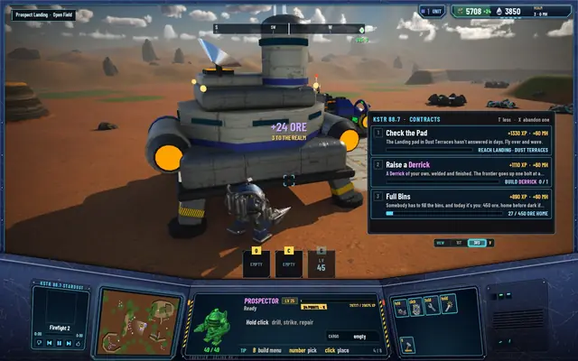
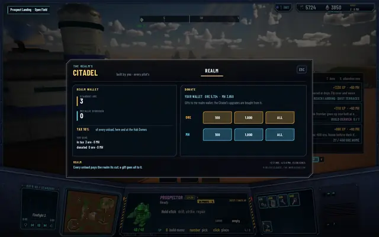
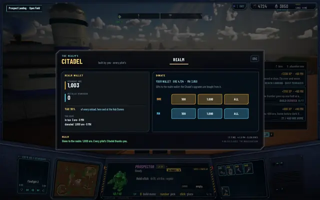
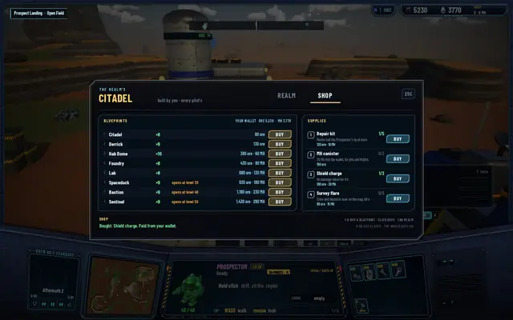
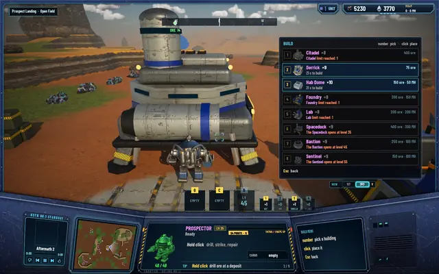
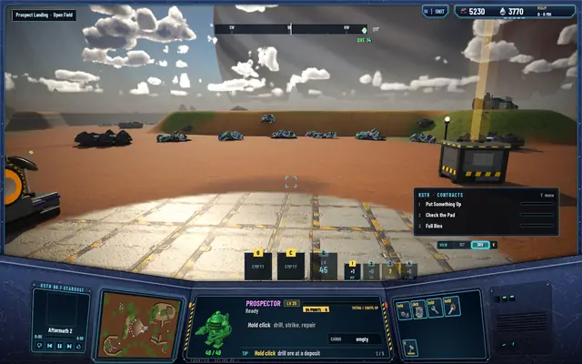

M8 · The realm under siege
The realm: shared buildings, a tax and a shop
I played the new mode to level 10, then sat down with a list. The first thing on it: a world with many pilots can't have a Citadel each. The buildings had to belong to everyone.
Buildings belong to the realm
Every building in a world is now the realm's. Any pilot unloads at any Citadel or Hab Dome, respawns at it, lands at its pads and, soon, is defended by its guns. The builder still gets the credit: the game keeps who built what, under a callsign of the form "Pilot XXXX", made from a hash of the pilot's key (the key itself never goes over the wire). A realm gets one Citadel; a later pilot's "build the Citadel" step points at the one already standing.
Old saves move over on their own: the save format went to version 8 and every old building became the realm's, with its builder kept.
The Citadel's tax
Every unload pays the realm 10%. It rounds to the nearest whole unit, takes at least 1, and never the whole load, so a tiny unload still leaves you something. The money goes into a realm wallet, shown at the Citadel and in the HUD.
Press H at the Citadel and its screen opens on the REALM tab: the realm wallet, the tax, what you have paid, and buttons to donate 100, 1,000 or everything you carry. The realm wallet is what will pay for the Citadel's own guns, which are being built now (coming next).
Album · The realm's tax

An unload at the Citadel: +24 ORE, 3 TO THE REALM.
The Citadel screen (H): the realm wallet holds the 3 ore of tax.
After a donation of 1,000: "Every pilot's Citadel thanks you."


The shop
The Citadel's second tab is a shop, paid from your own wallet. It sells every blueprint and four supplies. A blueprint is used up by one building, and copies stack, so you can buy three Hab Domes' worth before a trip. Prices rise with the blueprint's level floor and with every copy you buy: a blueprint costs (50 + 25F) × 1.5ⁿ ore and 5F × 1.5ⁿ MH, where F is its level floor and n the copies you already bought. The big ones open late: the Spacedock at level 35, the Bastion at 45, the Sentinel at 55.
| Supply | Key | What it does | Price |
|---|---|---|---|
| Repair kit | 1 | Mends half the Prospector's hp at once | 120 ore, 10 MH |
| MH canister | 2 | 25 MH into the wallet, for jets and flights | 150 ore |
| Shield charge | 3 | No damage taken for 8 s | 100 ore, 30 MH |
| Survey flare | 4 | Sites and deposits nearby show on the map for 60 s | 80 ore, 15 MH |
The shield charge exists because of what came next that same day: the Brood. Sites in the world still give a free blueprint when you open one, so exploring keeps paying.
Album · The shop

The SHOP tab: blueprints on the left, supplies on the right.
The build menu counts your copies: Hab Dome ×10.
A shield charge running: 8 seconds of no damage.


Under the hood this was three tasks by the agents (R1, C1 and C2), three network protocol versions and three save versions, each with a migration so yesterday's worlds still load. After the shop landed the suites stood at 458 core tests, 167 server tests and 67 network tests, all passing.